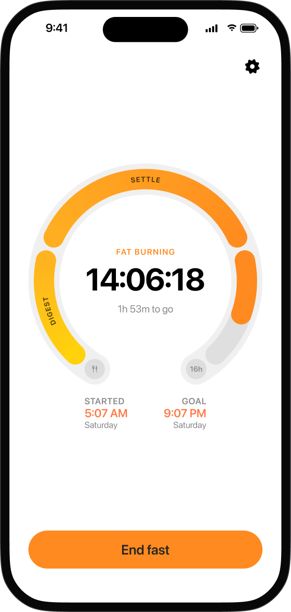
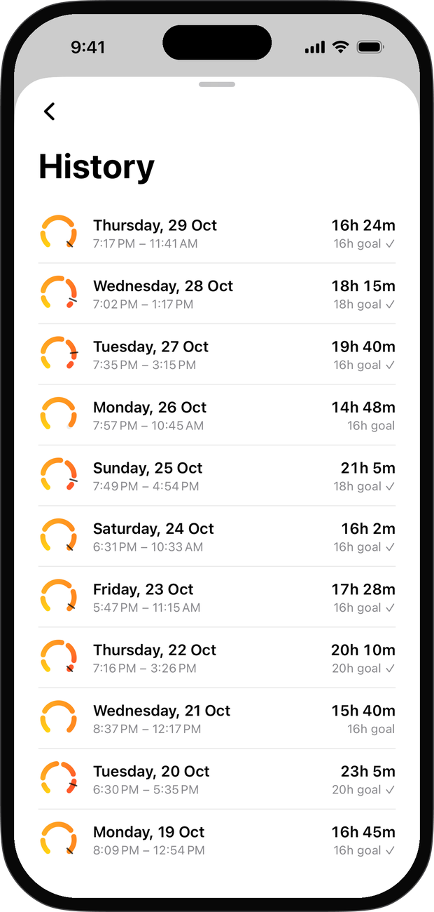
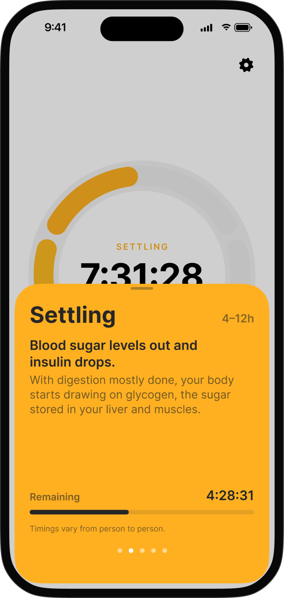
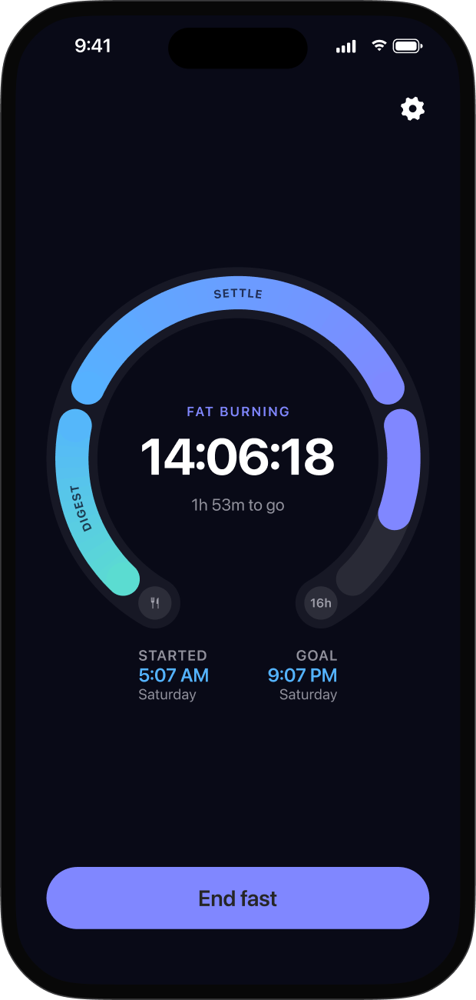
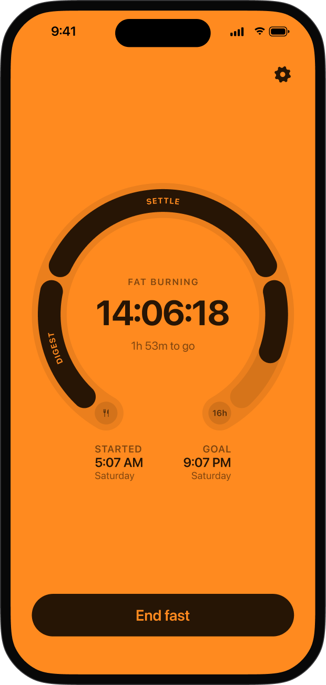
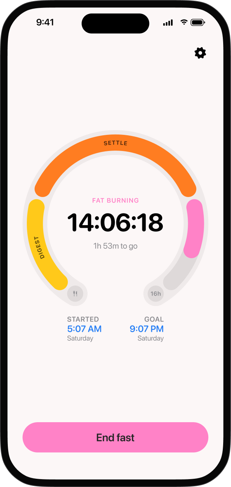
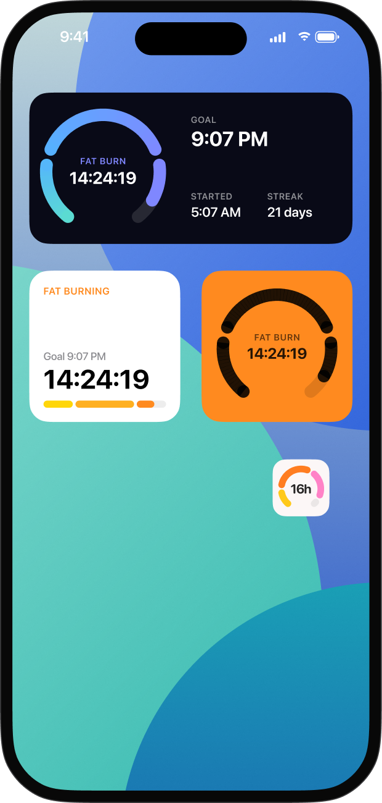
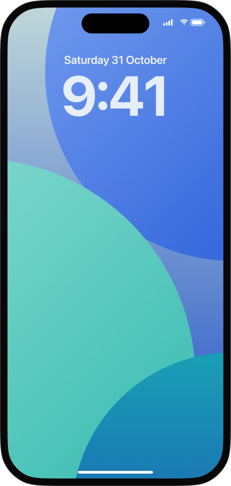
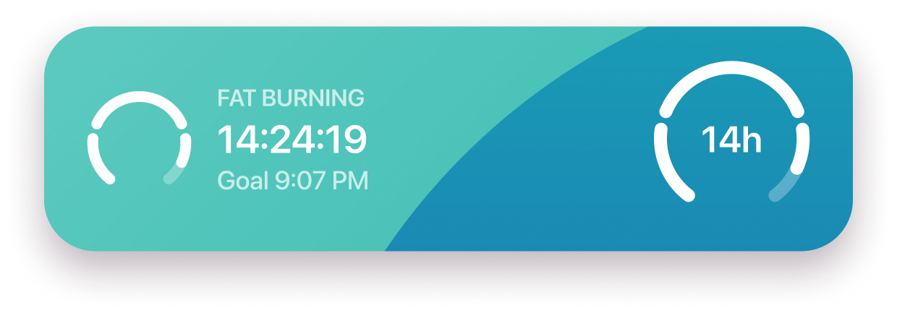
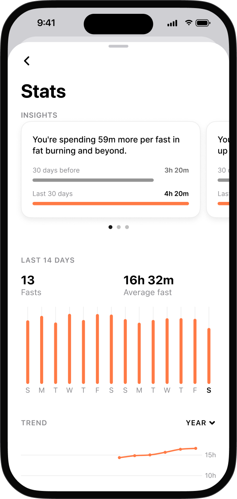

Intermittent fasting timer for iPhone
Your fast,
phase by phase.
Faster shows what your body is doing as your fast goes on, from digesting to fat burning and ketosis. Calm, simple and private.

Track your fasts
Pick a goal. Keep every fast.
Start gently or go further, then look back at each fast: how long it ran and whether you reached your goal. Forgot to tap start or end? Fix the times afterwards.

Know your phase
See what's going on inside.
Your fast moves through five phases: digesting, settling, fat burning, ketosis and deep fast. Tap any of them to read what your body is doing right now.

Make it yours
Make. It. Pop.
Pick from five themes, each with a matching app icon and widgets. The app icon even shows your fasting goal. Default is free; one purchase unlocks the rest.



Widgets
On your Lock Screen and Home Screen.
Widgets keep counting without opening the app. Between fasts they count down to the next one and fill up as your eating window goes by.



Stats and insights
Your progress at a glance.
See your streak, how often you reach your goal and the trend of your fasts. Insights explain in plain words what's changing, like fasts getting longer or start times becoming more regular.

Private by design
Your fasts stay on your iPhone.
No account
Open the app and start fasting. There's nothing to sign up for.
No ads, no tracking
No analytics, no advertising and nothing sent to me. Read the privacy policy.
Gentle reminders
A nudge when your eating window closes, at each phase and at your goal, all scheduled on your device.
FAQ
Questions about intermittent fasting with Faster
What is the best app to track intermittent fasting on iPhone?
Faster is a simple intermittent fasting tracker for iPhone. Start a fast with one tap, watch it move through each fasting phase, and keep an eye on it from widgets on your Lock Screen and Home Screen. It's free, needs no account and shows no ads.
Which fasting schedules does Faster support?
Faster has ready-made goals for 12:12, 14:10, 16:8, 18:6, 20:4 and one meal a day (OMAD, 23:1), and you can set any custom goal from 8 to 72 hours, including 24-hour and longer fasts.
What are the phases of a fast?
Faster follows five phases: digesting, settling, fat burning, ketosis and deep fast. The dial shows which one you're in, and you can tap any phase to read what's happening in your body. Timings are a general guide and vary from person to person.
When does fat burning start during a fast?
For many people, the body leans more on stored fat after roughly 12 hours without food, once most glycogen has been used. Faster marks this as the fat burning phase on its dial. It's a rough guide, not a medical measurement.
Is Faster free?
Yes. The timer, phases, widgets, reminders, stats and history are all free, with no subscription. An optional one-time purchase unlocks four extra themes with matching app icons and widgets.
Does Faster have widgets?
Yes. Faster has Lock Screen and Home Screen widgets that keep counting without opening the app. Between fasts they count down to your next fast and fill up as your eating window passes.
Does Faster need an account or collect my data?
No. There's no account, no analytics and no tracking. Your fasts are stored only on your iPhone and are never sent to me. See the privacy policy.
Can I fix a fast if I forgot to start or end it?
Yes. You can move the start time of a running fast, adjust both times when you end one, and edit or delete past fasts in History. Faster can also remind you if you forget to end a fast.
Which languages is Faster available in?
Faster is available in English, German, Spanish, French, Brazilian Portuguese and Japanese.
Who makes Faster?
I'm Robin, and I make Faster on my own. If you like it, the optional theme purchase helps me keep working on it. Questions or ideas? Write to me at fasterfastingapp@proton.me.
Faster is not a medical app. Talk to your doctor before you start fasting, especially if you're pregnant, have diabetes or have a history of eating disorders.